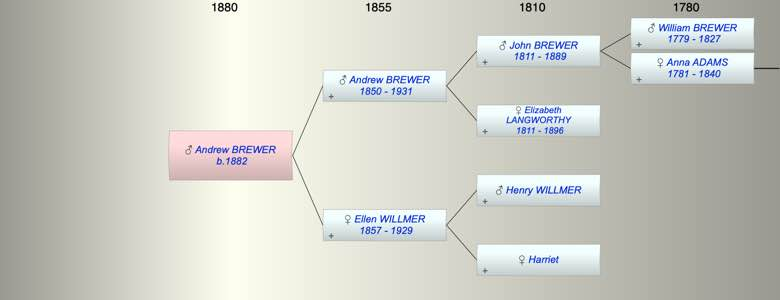

| [Index] |
| Andrew William BREWER (1882 - ) |
|  |
| b. 1882 at Wandsworth |
| Near Relatives of Andrew William BREWER (1882 - ) | ||||||
| Relationship | Person | Born | Birth Place | Died | Death Place | Age |
| Grandfather | John C BREWER | 14 Jul 1811 | Exminster | 1889 | Petersfield | 78 |
| Grandmother | Elizabeth LANGWORTHY | abt 1811 | Alphington | 1896 | Pertersfield | 85 |
| Grandfather | Henry WILLMER | |||||
| Grandmother | Harriet | |||||
| Father | Andrew BREWER | 07 Jun 1850 | Alphington | 02 Jul 1931 | 81 | |
| Mother | Ellen WILLMER | 1857 | Askington, Sussex, | 24 Jun 1929 | 72 | |
| Self | Andrew William BREWER | 1882 | Wandsworth | |||
| Aunt | Francis BREWER | 1835 | Exminster | Y | ||
| Aunt | Charles BREWER | 30 Apr 1841 | Exminster | |||
| Aunt | Ann BREWER | 1844 | Alphington | Y | ||
| Uncle | Horatio Lewis TAYLOR | 1845 | Portsmouth | 27 Mar 1896 | Portsmouth | 51 |
| Uncle | Henry BREWER | 1846 | Alphington | Y | ||
| Aunt | Elizabeth COOMBES | |||||
| Aunt | Rebecca BREWER | 1849 | Alphington | Y | ||
| Uncle | William John EARLE | 1847 | Plymouth | |||
| Cousin | Mildred TAYLOR | 1869 | Exeter | |||
| Cousin | Louisa Mary TAYLOR | 1870 | Exeter | |||
| Cousin | Horatio L. TAYLOR | 1872 | Basingstoke | |||
| Cousin | William C TAYLOR | 1874 | Liphook | |||
| Cousin | Emmeline TAYLOR | 1876 | Liphook | |||
| Cousin | Christopher J. TAYLOR | 1878 | Liphook | |||
| Cousin | Robert George TAYLOR | 1885 | Liphook | |||
| Cousin | Francis BREWER | 1868 | Poltimore, Devon | |||
| Cousin | Ellen BREWER | 1870 | Poltimore, Devon | |||
| Cousin | WIlliam BREWER | 1872 | Devon | |||
| Cousin | Alice E BREWER | 1875 | Batttersea | |||
| Cousin | Lucy BREWER | 1880 | Battersea | |||
| Cousin | Henry BREWER | 1883 | Battersea | |||
| Cousin | Emily Kate BREWER | 1884 | Battersea | |||
| Cousin | Lilian Rose BREWER | 1888 | Battersea | |||
| Cousin | Charles Lewis BREWER | 1891 | Battersea | |||
| Cousin | Albert A EARLE | 1884 | Weybridge, Surrey | |||
| Cousin | WIlfred E EARLE | 1885 | Weybridge | |||
| Cousin | William H EARLE | 1888 | Weybridge | |||
| Cousin | Dennis Harold EARLE | 1889 | Portsmouth | 1928 | 39 | |
| Cousin | MIldred EARLE | 1891 | Portsmouth | |||
| Events in Andrew William BREWER (1882 - )'s life | |||||
| Date | Age | Event | Place | Notes | Src |
| 1882 | Andrew William BREWER was born | Wandsworth | Note 1 | ||
| 24 Jun 1929 | 47 | Death of mother Ellen WILLMER (aged 72) | aged 84 ex MI | ||
| 02 Jul 1931 | 49 | Death of father Andrew BREWER (aged 81) | Note 2 | ||
| Note 1: Bap St Stephen Wandsworth 9 Nov 1882 son of Andrew Willima and Ellen ex FMP PR |
| Note 2: aged 80 ex MI buried Ipswich, Queensland Australia |
| Created on a Mac™ using iFamily for Mac™ on 15 Sep 2023 |